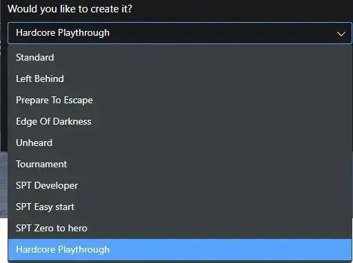

Hardcore Rules
- Downloads
- 11,032
- Favourites
- 8
- Mod lists
- 15
Is SPT getting too easy? Too much nice gear collecting dust in your stash? Fix that problem with a hardcore playthrough similar to DeadlySlob’s hardcore rules for live Tarkov. I was inspired by Fin’s Hardcore Options and made a new version that simply implements the hardcore rulesets by DeadlySlob and other streamers.
To start a new hardcore playthrough, create a new profile in the SPT launcher using the “Hardcore Playthrough” edition this mod adds. By default, this mod will be active when a profile using the “Hardcore Playthrough” edition is loaded, and it will be deactivated when any other profile edition is loaded.

If you’re using an existing hardcore profile from a previous version of this mod (that was compatible with SPT 3.9.x), you can still use it if you do one of the following:
- Set use_for_all_profiles=true in config.json to apply the hardcore ruleset to all profiles, regardless of their edition
- Change info.edition to “Hardcore Playthrough” (case-sensitive) in the JSON data for your profile. Always make a backup before manually changing your profile!
If you’re using Fika, do not mix players who are using hardcore profiles with players who are not. This will result in trader inventories and flea-market item availability not working correctly for some players.
This mod is highly customizable, so you can change the configuration to match the level of difficulty you want. Here are the settings you can change in the config.json file in this mod:
- services.flea_market.enabled: if this is false, you can’t list new offers, and there won’t be any player offers. You can only use the flea-market interface to browse trader offers.
- services.flea_market.only_barter_offers: if you’ve enabled the flea market, you can set this to false to disable all offers using currency.
- services.disable_trader_repairs: Only repair kits can be used for repairs.
- services.disable_insurance: All items will be blacklisted from insurance, and the insurance screen will not be displayed when loading into a raid. In case you want to turn this off and on during a playthrough, this will not remove insurance for any items that were previously insured.
- services.disable_post_raid_healing: Disables Therapist’s post-raid healing, but the screen will still be shown so you can review the damage you received during the raid.
- services.disable_scav_raids: Disables Scav raids.
- traders.disable_fence: Allows you to remove all of Fence’s offers. You can still sell items to Fence.
- traders.disable_starting_gifts: Prapor and Mechanic no longer give you starting gifts.
- traders.barters_only: Removes all trader offers using currency unless they’re explicitly whitelisted below.
- traders.allow_GPCoins: Allows trader offers for GP coins to be considered barter offers. As of SPT 3.9.0, GP coins are considered currency.
- traders.whitelist_only: Removes all trader offers unless they’re explicitly whitelisted in this mod.
- traders.whitelist_items: If only barters are allowed, use this to whitelist items (or parents of items) even if they’re not barters. You can find ID’s for items using https://db.sp-tarkov.com/search/ or find them in [SPT install directory]\SPT\SPT_Data\database\templates\items.json.
- traders.whitelist_traders: An array of the ID’s of traders that will not have their offers modified. Trader ID’s can be viewed when the server starts if debug.enabled=true.
- secureContainer.only_use_whitelists_in_this_mod: If this is true, you can’t put anything in secure containers unless you explicitly whitelist them. If this is false, the following whitelists are ignored and the default EFT ones are used instead. This restriction also applies to items contained within the one you’re trying to put in your secure container. For example, you can put a docs case in your secure container, but you cannot put a docs case containing currency in your secure container. Similarly, you can put a docs case containing examined keys into your secure container while in your stash, but you cannot do this in-raid. If you remove a docs case containing examined keys from your secure container while in-raid, you’ll need to remove all the examined keys before you’ll be allowed to put the docs case back into your secure container. For this reason, be careful about unexamined keys! If you examine them and then remove them from your secure container, you’ll be unable to put them back in while you’re in-raid.
- secureContainer.whitelist.global: The items (or parents of items) in this whitelist are applied all the time.
- secureContainer.whitelist.inHideout: The items in this whitelist are applied only while not in-raid.
The following items are whitelisted for trader offers by default:
- All currency (you can exchange RUB for USD, etc. as much as you want)
- All inventory containers (item cases, Scav junkboxes, etc.)
- All special items (markers, signal jammers, etc.)
- All maps
- Green and yellow flares
The following items are whitelisted for putting in your secure container by default:
- All keys and keycards (but they must not be examined when in raid)
- Key tool
- Gingy keychain
- Keycard holder
- S I C C case
- Documents case
Good luck!
Version
3.0.0
- Updated for SPT 4.0
Config.json files from previous releases are not compatible.
Version
2.2.1
-
Added null checks when filtering trader assorts to help with troubleshooting mod conflicts
-
Only show Info messages if debug.enabled=true
-
Changed from using FileSystem to FileSystemSync
-
Bug fix for exceptions if a trader’s started, success, or fail assorts are null
Config.json files from the 2.2.0 release are compatible.
Version
2.2.0
- Updated for SPT 3.11
- Renamed disable_prapor_starting_gifts to disable_starting_gifts in config.json and made it also disable Mechanic’s starting gift
Config.json files from previous releases are not compatible.
Version
2.1.0
- Updated for SPT 3.10.0
- Refactoring and minor performance improvements
Config.json files from the 2.0.0 - 2.0.2 releases are compatible.
Version
1.4.0
- Updated to SPT 3.9.0
- Bug fix for Scav runs being available after creating a new profile until restarting the game
Config.json files from the 1.2.0 through 1.3.2 releases are compatible, but yellow flares will not be whitelisted in them by default.
Version
1.3.2
- Added config option to disable Prapor’s starting gifts (enabled by default)
- Bug fix for allowing SPT 3.9.0
Config.json files from the 1.2.0 through 1.3.1 releases are compatible, but yellow flares will not be whitelisted in them by default.
Version
1.3.0
Changes in 1.3.0 HF1:
- Increased minimum SPT-AKI version to 3.8.0
Changes in 1.3.0:
- Updated for SPT-AKI 3.8.0
- Whitelisted yellow flares to purchase from traders
- Removed the version number from the directory name in \user\mods\
- Updated client code to be version-agnostic, so it will (hopefully) be compatible with future SPT versions too
- Updated server code per Lint recommendations
Config.json files from the 1.2.0 through 1.2.2 releases are compatible, but yellow flares will not be whitelisted in them by default.
Version
1.2.2
- Updated for SPT-AKI 3.7.1
- Bug fix for cash offers eventually returning to the flea market when services.flea_market.only_barter_offers=true
Config.json files from the 1.2.0 and 1.2.1 releases are compatible.
Thanks to Bayard for help with testing!